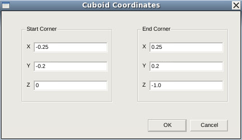
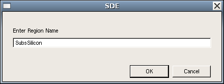
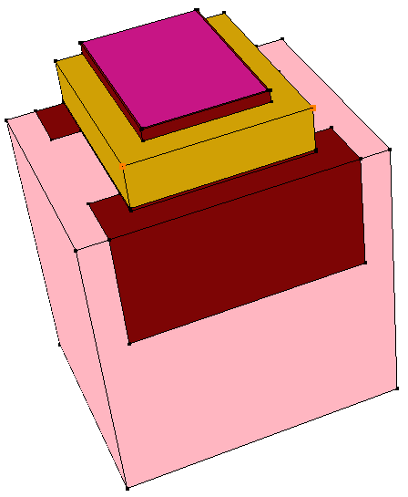
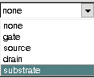
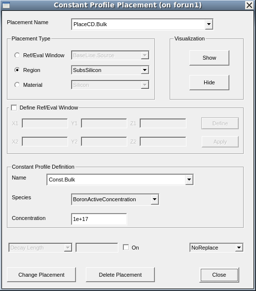
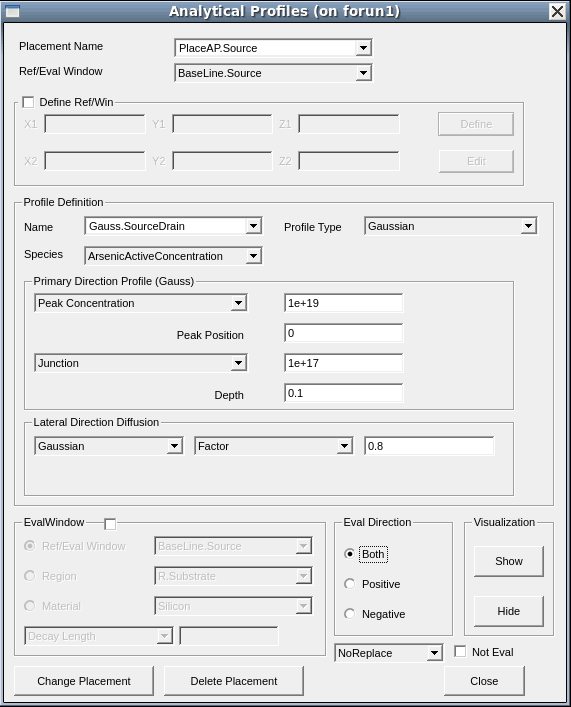
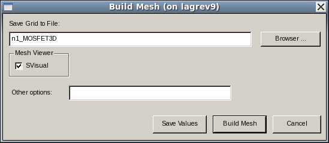

Sentaurus Structure Editor
6. Three-Dimensional Structures
6.1 Overview
6.2 Reinitializing Sentaurus Structure Editor
6.3 Automatic Region-Naming Mode
6.4 Selecting Materials
6.5 Selecting the Default Boolean Expression
6.6 Creating a Cuboid Region
6.7 Changing the View and Zooming
6.8 Poly Reoxidation
6.9 Nitride Spacers
6.10 Defining the Contacts
6.11 Setting the Contacts at Existing Faces
6.12 Setting the Contacts at New Faces
6.13 Defining Constant Doping Levels in a Region
6.14 Defining Analytic Doping Profiles
6.15 Defining a Meshing Strategy in a Window
6.16 Defining a Multibox Mesh Strategy in a Refinement Window
6.17 Saving the Model
6.18 Meshing the Device Structure
6.19 Assignment
Objectives
- To create three-dimensional structures using Sentaurus Structure Editor.
6.1 Overview
Section 2. Generating 2D Boundaries demonstrates the steps for building a 2D SOI MOSFET. Sentaurus Structure Editor also can construct 3D structures.
This section introduces the procedure to build a 3D MOSFET as shown in Figure 1.
{kind=link}
Figure 1. Three-dimensional MOSFET. (Click image for full-size view.)
Due to the similarity of 2D and 3D operations, many commands and operations executed in this section are identical to those described in the 2D case. Therefore, cross references to relevant sections will be given to avoid duplication of text.
6.2 Reinitializing Sentaurus Structure Editor
See Section 2.2 Reinitializing Sentaurus Structure Editor.
6.3 Automatic Region-Naming Mode
By default, Sentaurus Structure Editor automatically assigns region names such as region_1 and region_2 to newly created regions. This is useful in some applications but, in most cases, you might prefer to use your own names, which are more descriptive and easier to remember.
To switch off the automatic region-naming mode, choose Draw > Auto Region Naming (ensure there is no check mark next to the command).
When the mode has been switched off, you will be prompted to enter the region name whenever a new region is created.
The corresponding Scheme command is:
(sdegeo:set-auto-region-naming OFF)
6.4 Selecting Materials
See Section 2.4 Selecting Materials.
6.5 Selecting the Default Boolean Expression
See Section 2.5 Selecting the Default Boolean Expression.
6.6 Creating a Cuboid Region
To create a cuboidal silicon substrate region:
- Switch off the automatic region-naming mode by choosing Draw > Auto Region Naming.
- Choose Draw > Exact Coordinates.
- Choose Draw > Overlap Behavior >
New Replaces Old or click the
 toolbar button to select the default
Boolean expression for resolving overlapping.
toolbar button to select the default
Boolean expression for resolving overlapping. - Select the Isometric View ().
- Choose Draw > 3D Create Tools > Create Cuboid.
- Select Silicon from the Material list.
- Draw the cuboid in the view window:
- Click to place the first corner of the cuboid and drag the pointer to the location of the opposite corner of the upper face of the cuboid (or lower face depending on the final placement of the cuboid).
- Finally, move the pointer (without pressing any button) to extend the face in the third direction. Click once to define the cuboid.
- When the drawing is completed, the Cuboid Coordinates dialog box is
displayed.
Enter (-0.25 -0.2 0), (0.25 0.2 -1.0) to define the two opposite corners of the cuboid and click OK.

- Since the automatic region-naming mode is switched off, a dialog box opens for the name of the region. Enter SubsSilicon.
- Click OK.

- If the cuboid does not fit the view, choose View > Zoom to Extents.
Other regions of the device, that is, the isolation trenches, the gate oxide, and the polysilicon gate can be created in a similar way. Use the following coordinates.
| Region | Name | Material | Coordinates |
|---|---|---|---|
| Substrate | SubsSilicon | Silicon | (-0.25 -0.2 0), (0.25 0.2 -1.0) |
| Right trench | TrenchOxide_Right | SiO2 | (-0.2 -0.2 0), (0.2 -0.1 -0.2) |
| Left trench | TrenchOxide_Left | SiO2 | (-0.2 0.1 0), (0.2 0.2 -0.2) |
| Gate oxide | GateOxide | SiO2 | (-0.15 -0.2 0), (0.15 0.2 0.002) |
| Poly gate | PolyGate | PolySi | (-0.1 -0.1 0.002), (0.1 0.2 0.1) |
The corresponding Scheme commands for creating these regions are:
(sdegeo:create-cuboid (position -0.25 -0.2 0) (position 0.25 0.2 -1.0) "Silicon" "SubsSilicon") (sdegeo:create-cuboid (position -0.15 -0.1 0) (position 0.15 0.1 0.002) "Oxide" "GateOxide") (sdegeo:create-cuboid (position -0.2 -0.2 0) (position 0.2 -0.1 -0.2) "Oxide" "TrenchOxide_Right") (sdegeo:create-cuboid (position -0.2 0.1 0) (position 0.2 0.2 -0.2) "Oxide" "TrenchOxide_Left") (sdegeo:create-cuboid (position -0.1 -0.1 0.002) (position 0.1 0.2 0.1) "PolySi" "PolyGate")
6.7 Changing the View and Zooming
Sentaurus Structure Editor supports functions that allow the structure in the view window to be seen from different perspectives:
- To view the structure from any of the axis directions, select one of these toolbar buttons:
- To rotate the structure, click the Orbit () button. Drag one point of the structure to rotate it in any direction.
- To zoom in or out, click the Zoom button. To zoom in, drag the pointer upwards to the left. To zoom out, drag the pointer downwards to the right.
Figure 2 shows the current status of the structure viewed from different angles.
{kind=link}
Figure 2. (Left) Current status of 3D MOSFET structure and (right) status of 3D MOSFET after using the Orbit button to change the angle. (Click image for full-size view.)
6.8 Poly Reoxidation
To create a poly reoxidation region:
- Change the default Boolean expression to Old Replaces New
().
This ensures that the old regions of the structure remain intact while new regions are defined and placed. - Create a cuboid that overlaps the polysilicon gate region and another on top
of the substrate surface. Follow the steps in
Section 6.6 Creating a Cuboid Region
and use the following parameter values.
Region Name Material Coordinates Poly reoxidation 1 PolyReOxide1 SiO2 (-0.103 -0.103 0) (0.103 0.2 0.1) Poly reoxidation 2 PolyReOxide2 SiO2 (-0.15 -0.103 0) (0.15 0.2 0.005)
The corresponding Scheme commands are:
(sdegeo:set-default-boolean "BAB") (sdegeo:create-cuboid (position -0.103 -0.103 0) (position 0.103 0.2 0.1) "Oxide" "PolyReOxide1") (sdegeo:create-cuboid (position -0.15 -0.15 0) (position 0.15 0.2 0.005) "Oxide" "PolyReOxide2")
6.9 Nitride Spacers
To add nitride spacers:
- Click the Old Replaces New button.
- Create a cuboid using the following parameter values.
Region Name Material Coordinates Nitride spacers NiSpacer Si3N4 (-0.15 -0.15 0), (0.15 0.2 0.08)
To round the spacer corners and edges:
- From the Selection Level list, choose Select Vertex.
- Click the Select
(
 )
toolbar button.
)
toolbar button. - Select the corner vertices of the spacer.
Multiple vertices can be selected simultaneously by holding the Ctrl key when selecting.
Figure 3. Selecting corner vertices of the spacer. (Click image for full-size view.)
- Choose Edit > 2D Edit Tools > Fillet.
A dialog box opens for input of the fillet radius. - Enter 0.03, and click OK.
{kind=link}
{kind=link}
Figure 4. Rounded corners of the spacer after using the fillet-radius parameter. (Click image for full-size view.)
The corresponding Scheme commands are:
(sdegeo:create-cuboid (position -0.15 -0.15 0) (position 0.15 0.2 0.08)
"Nitride" "NiSpacer")
(sde:define-parameter "fillet-radius" 0.03 0.0 0.0 )
(sdegeo:fillet
(list (car (find-vertex-id (position -0.15 -0.15 0.08)))
(car (find-vertex-id (position 0.15 -0.15 0.08))) ) fillet-radius)
6.10 Defining the Contacts
To define a contact:
- Choose Contacts > Contact Sets.
The Contact Sets dialog box opens.
- In the Contact Name field, enter gate.
- In the Edge Color fields, enter 1, 0, 0.
- In the Edge Thickness field, leave the default as 4.
- In the Face Pattern field, select ##.
- Click Set.
- Define the other contacts,drain, source, and substrate, in the same way using the specifications in the corresponding Scheme commands.
- When all contacts have been defined, click Close.
{kind=link}
6.11 Setting the Contacts at Existing Faces
As in the 2D case, contacts do not become effective unless they are associated with part of the device structure. In 3D applications, contacts are typically defined on the faces of the device.
To place a substrate contact:
- From the Contact list, select substrate.

- From the Selection Level list, choose Select Face.
- Click the Select
() button.
- Select the bottom face of the silicon substrate.
- Choose Contacts > Set Faces to associate the substrate
with the bottom of the substrate.
(The bottom face is now decorated with the pattern set previously for the substrate contact.) - Repeat the previous steps and define the gate contact on top of the polysilicon
surface.
The source and drain contacts are, however, slightly different and require new faces to be created before they can be defined, which will be explained in the next section.
The corresponding Scheme commands are:
(sdegeo:set-contact (find-face-id (position 0 0 -1) ) "substrate") (sdegeo:set-contact (find-face-id (position 0 0 0.1)) "gate")
6.12 Setting the Contacts at New Faces
The source and drain only occupy part of an existing face (the top silicon substrate face). Therefore, new faces must be created before these two contacts can be placed.
To create a new face, create a metal cuboid to imprint the face:
- Create a cuboid metal region for the source and one for the drain as
discussed in Section 6.6 Creating a Cuboid Region. Use the following
parameter values.
Region Name Material Coordinates Source cuboid Source Metal (0.17 -0.1 0) (0.25 0.1 0.05) Drain cuboid Drain Metal (-0.25 -0.1 0) (-0.17 0.1 0.05)
- Remember these two regions are created only for the purpose of generating new faces
on the device and are not a real part of the device structure. To remove them:
- From the Selection Level list, choose Select Body.
- Click the Select button.
- Select the two metal regions. To allow multiple regions to be selected at one time, hold the Ctrl key when selecting. All the selected regions are highlighted.
- Choose Edit > 2D Edit Tools > Delete Region.
- Although the two newly created metal regions have been removed immediately, the new faces created by the intersection of the two metal regions with the silicon top surface remain. The association of the source and drain contacts with these new faces now can be established using the technique from Section 6.11 Setting the Contacts at Existing Faces.
The corresponding Scheme commands for creating the two metal regions and replacing them with contacts are:
(define SOURCE (sdegeo:create-cuboid (position -0.25 -0.1 0) (position -0.17 0.1 0.05) "Metal" "Source")) (sdegeo:set-contact SOURCE "source" "remove") (define DRAIN (sdegeo:create-cuboid (position 0.17 -0.1 0) (position 0.25 0.1 0.05) "Metal" "Drain")) (sdegeo:set-contact DRAIN "drain" "remove")
6.13 Defining Constant Doping Levels in a Region
Defining a constant doping level in a 3D region is similar to that for a 2D region (see Section 3.3 Defining Analytic Doping Profiles).
To define a constant doping level of 1x1017 cm-3 in the silicon substrate:
- Choose Device > Constant Profile Placement.
The Constant Profile Placement dialog box opens.

- Enter PlaceCD.Bulk in the Placement Name field.
- Under Placement Type, select Region as the type, and select SubsSilicon from the list.
- Under Constant Profile Definition, enter Const.Bulk in the Name field.
- Select BoronActiveConcentration from the Species list.
- Enter 1e17 in the Concentration field.
- Click Add Placement.
- Repeat these steps to define an ArsenicActiveConcentration of 1020 cm-3 in the polysilicon gate region.
- Click Close.
The corresponding Scheme commands are:
(sdedr:define-constant-profile "Const.Bulk" "BoronActiveConcentration" 1e17) (sdedr:define-constant-profile-region "PlaceCD.Bulk" "Const.Bulk" "SubsSilicon") (sdedr:define-constant-profile "Const.Poly" "ArsenicActiveConcentration" 1e20) (sdedr:define-constant-profile-region "PlaceCD.Poly" "Const.Poly" "PolyGate")
6.14 Defining Analytic Doping Profiles
Defining an analytic doping profile in a 3D region is comparable to the 2D case. The only difference is that, in the 3D case, the reference for the profile is a 2D plane. In the 2D case, it is a 1D edge.
As in the 2D case, the definition of a profile in a 3D region involves two steps. The first step defines the baseline window and the second step defines the profile itself. The baseline window determines the lateral extent of the profile and serves as the reference point for the depth of the peak position of the profile.
The following instructions define the source and drain implantations, both in Gaussian shape, with a peak concentration of 1019 cm-3, a junction depth of 0.1 μm, and a lateral straggle/diffusion factor of 0.8.
To define a baseline window:
- Choose Draw > Exact Coordinates.
- Choose Mesh > Define Ref/Eval Window > Rectangle.
- In the view window, draw a rectangle.
- In the Exact Coordinates dialog box, enter (0.30 -0.25) and (0.15 0.25) to define the rectangle.
- In the Ref/Eval Window Name field, type BaseLine.Source for the baseline name.
- Click OK.
- Repeat these steps for the drain baseline definition. Use the following parameter
values.
Junction Baseline name Start point End point Source BaseLine.Source (0.30 -0.25) (0.15 0.25) Drain BaseLine.Drain (-0.15 -0.25) (-0.30 0.25)
The corresponding Scheme commands for these two definitions are:
(sdedr:define-refeval-window "BaseLine.Source" "Rectangle" (position 0.30 -0.25 0.0) (position 0.15 0.25 0.0) ) (sdedr:define-refeval-window "BaseLine.Drain" "Rectangle" (position -0.30 -0.25 0.0) (position -0.15 0.25 0.0) )
To define and place the Gaussian doping profiles:
- Choose Device > Analytical Profile Placement.
The Analytical Profiles dialog box opens.

- Enter PlaceAP.Source in the Placement Name field.
- Select BaseLine.Source from the Ref/Win list.
- Under Profile Definition, enter Gauss.SourceDrain in the Name field.
- Select ArsenicActiveConcentration from the Species list.
- Enter 1e19 in the Peak Concentration field.
- Enter 0 in the Peak Position field.
- Enter 1e17 in the Junction field and 0.1 in the Depth field.
- Enter 0.8 in the Lateral Diffusion Factor field.
- Click Add Placement.
- Repeat these steps and define the drain implant.
Note that the profile definition Gauss.SourceDrain can be reused but the baseline must change to BaseLine.Drain. - Click Close.
The corresponding Scheme commands are:
(sdedr:define-gaussian-profile "Gauss.SourceDrain" "ArsenicActiveConcentration" "PeakPos" 0.0 "PeakVal" 1e19 "ValueAtDepth" 1e17 "Depth" 0.1 "Gauss" "Factor" 0.8) (sdedr:define-analytical-profile-placement "PlaceAP.Source" "Gauss.SourceDrain" "BaseLine.Source" "Both" "NoReplace" "Eval") (sdedr:define-analytical-profile-placement "PlaceAP.Drain" "Gauss.SourceDrain" "BaseLine.Drain" "Both" "NoReplace" "Eval")
6.15 Defining a Meshing Strategy in a Window
To generate a meshing strategy that is globally effective, first create a refinement window covering the entire device area, then define a meshing strategy, and apply it to the window.
To generate a meshing strategy:
- Switch on the Exact Coordinates mode by choosing Draw > Exact Coordinates.
- Choose Mesh > Define Ref/Eval Window > Cuboid.
A dialog box opens for the name of the refinement box. - Enter RefWin.Global.
- Click OK.
- In the Cuboid Coordinates dialog box, enter (-0.25 -0.2 -0.5), (0.25 0.2 0.1) for the location of the refinement window.
- Click OK.
- Choose Mesh > Refinement Placement.
The Refinement Specification dialog box opens.
- Enter Place.Global as the Placement Name.
- From the Ref/Eval Window list, select RefWin.Global as the refinement window.
- Under Refinement Definition, enter RefDef.Global in the Name field.
- Enter the Max Element Size and Min Element Size for all directions: Xmax = Ymax = Zmax = 0.1 and Xmin = Ymin = Zmin = 0.05.
- Click Add Placement.
- Repeat these steps and define a tighter refinement strategy in the top active region of the device. Use RefWin.Active as the refinement box name and the coordinates (-0.25 -0.2 -0.15) (0.25 0.2 0.0) for the refinement window. Use Place.Active as the placement name and set Xmax = Ymax = Zmax = 0.025 and Xmin = Ymin = Zmin = 0.0125.
- Click Close.
{kind=link}
The corresponding Scheme commands are:
(sdedr:define-refeval-window "RefWin.Global" "Cuboid" (position -0.25 -0.2 -1.0) (position 0.25 0.2 0.1)) (sdedr:define-refinement-size "RefDef.Global" 0.1 0.1 0.1 0.05 0.05 0.05 ) (sdedr:define-refinement-placement "Place.Global" "RefDef.Global" "RefWin.Global" ) (sdedr:define-refeval-window "RefWin.Active" "Cuboid" (position -0.25 -0.2 -0.15) (position 0.25 0.2 0.0)) (sdedr:define-refinement-size "RefDef.Active" 0.025 0.025 0.025 0.0125 0.0125 0.0125 ) (sdedr:define-refinement-placement "Place.Active" "RefDef.Active" "RefWin.Active")
6.16 Defining a Multibox Mesh Strategy in a Refinement Window
To add a multibox refinement strategy in the channel region:
- Choose Mesh > Multibox Placement.
The Multibox Specification dialog box opens.
- Enter PlaceMB.Channel in the Placement Name field.
- Select the option Define Ref/Eval Window, enter the coordinates (-0.12 -0.1 -0.05) and (0.12 0.1 0.0) for the cuboid window definition, and click Define.
- Enter the window name RefWin.Channel in the dialog box that opens, and click OK.
- Under Placement Type, select RefWin.Channel from the list.
- Under Multibox Definition, enter MB.Channel in the Name field.
- Enter the values for the maximum and minimum grid spacing for the directions:
Xmax = Ymax = 0.1 and Zmax = 0.01, Xmin = Ymin = 0.05 and Zmin = 0.001. - For the X and Y ratios, enter 1. For the Z ratio, enter -1.5.
- Click Add Placement.
- Click Close.
{kind=link}
Figure 5 shows the device after these steps with refinement windows.
{kind=link}
Figure 5. Three-dimensional MOSFET with refinement windows. (Click image for full-size view.)
The corresponding Scheme commands for placing the multibox are:
(sdedr:define-refeval-window "RefWin.Channel" "Cuboid" (position -0.12 -0.1 -0.05) (position 0.12 0.1 0)) (sdedr:define-multibox-size "RefDefMB.Channel" 0.1 0.1 0.01 0.05 0.05 0.001 1 1 -1.5 ) (sdedr:define-multibox-placement "PlaceMB.Channel" "RefDefMB.Channel" "RefWin.Channel" )
6.17 Saving the Model
To save the model for later use, choose File > Save Model, or press Ctrl+S, or click the corresponding toolbar button.
The corresponding Scheme command is:
(sde:save-model "3dmos_sde")
where 3dmos_sde is the saved file name. See Section 2.12 Saving the Model for the various file types saved.
6.18 Meshing the Device Structure
To create the mesh and save the device structure:
- Choose Mesh > Build Mesh.
The Build Mesh dialog box opens.

- Enter n1_MOSFET3D in the Save Grid to File field.
- Select SVisual as the mesh viewer.
- Click Build Mesh.
The structure with its doping conditions is saved in a TDR file n1_MOSFET3D_msh.tdr, which can be loaded into, for example, Sentaurus Device simulations.
Figure 6 shows the device after the meshing step.
{kind=link}
Figure 6. Three-dimensional MOSFET with its doping and meshing conditions. (Click image for full-size view.)
The corresponding Scheme command is:
(sde:build-mesh "" "n1_MOSFET3D")
Click to view all the commands discussed in this section in the command file MOSFET3d_dvs.cmd.
The complete project can be investigated from within Sentaurus Workbench in the directory Applications_Library/GettingStarted/sde/MOSFET3D.
6.19 Assignment
Create a FinFET structure similar to the one shown in Figure 7.
{kind=link}
Figure 7. Three-dimensional FinFET structure with its doping and meshing conditions. (Click image for full-size view.)
Click to view a solution of the command file FinFET_dvs.cmd.
The complete project can be investigated from within Sentaurus Workbench in the directory Applications_Library/GettingStarted/sde/FinFET.
Copyright © 2022 Synopsys, Inc. All rights reserved.